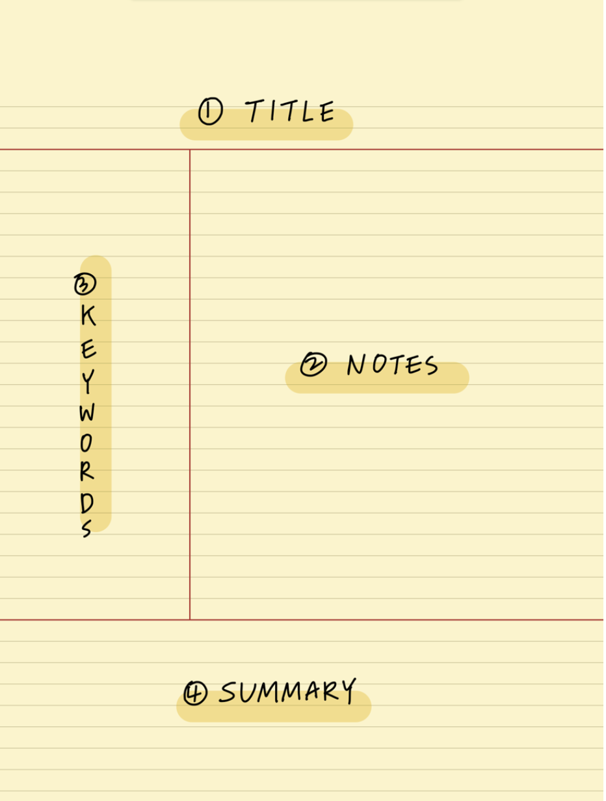

Make great notes
How to make the most of lectures and workshops.

Overview
This activity will introduce you to the Cornell Note-Taking Method, a powerful tool for organizing and reviewing your notes effectively. You’ll be guided through how to use the method, apply it in a lecture, and reflect on the experience.
Overview of the Cornell Note-Taking Method
The Cornell Method divides your note page into three main sections:
Note-taking area (on the right side): During the lecture, use this large section to take detailed notes as you normally would. Write down key points, facts, and anything that stands out.
Cue column (on the left side): After the lecture, write down questions, keywords, or cues based on your notes. This helps to summarize and organize the main ideas.
Summary section (at the bottom): Write a brief summary of the lecture’s key points. This helps consolidate the material and makes it easier to review later.
Here’s a visual breakdown of the Cornell method:

How to use Cornell note-taking
If this is your first time using the Cornell Method, don’t worry! Follow these steps carefully during and after the lecture to get the most out of this new note-taking technique.
Before the Lecture:
Prepare your paper or digital template:
Print the Cornell Note-Taking Template or open it digitally.
Notice the page is divided into the three key sections (if using blank paper):
- Note-taking area (Right, about 70% of the page)
- Cue column (Left, about 30% of the page)
- Summary section (Bottom, 2-3 lines across the whole width)
During the Lecture:
Take notes in the Note-taking area:
- Write down the main points, key concepts, and important facts.
- Use bullet points, shorthand, or whatever style you are comfortable with to capture the information.
- Don’t worry about organizing or filtering the information just yet—this section is for capturing the lecture as it happens.
After the Lecture
Complete the Cue column:
- Review your notes and identify the main themes, ideas, or questions that emerge from the lecture.
- Write down keywords, questions, or prompts in the left column that will help you recall the material when reviewing later.
- For example, if your note says “Photosynthesis process,” your cue could be “How does photosynthesis work?”
Write a Summary: In the summary section at the bottom, condense the entire lecture into 1-2 sentences. This forces you to distill the most important ideas and creates a quick reference for future studying.
Top Tip: Review your notes right after the lecture
This method is especially powerful when you actively revisit your notes, use the cues to test yourself, and summarize regularly.
Try to review notes right after the lecture, and certainly on the same day while everything is fresh in your mind.
Instructions
Get setup
Print the template or set yourself up to use it digitally on your tablet or laptop.
Use the Method in a Lecture
- Choose at least one of your lectures this week to try out the Cornell method.
Reflect on the Experience:
After the lecture, write a brief reflection answering some of these questions:
- How was your experience using this method compared to your usual note-taking?
- Did dividing the page help you organize your thoughts better?
- Do you think this method will help you in the future? Why or why not?
- Would you make any changes to how you take notes using this method?
- Could you see yourself using this method regularly, or would it need adjustments to work for you?
Recording your work
Upload your reflection to Psybot for feedback and extra suggestions.
Extension activities
For a more detailed guide to the method, see: Saran, Gober and McCarty (2022)